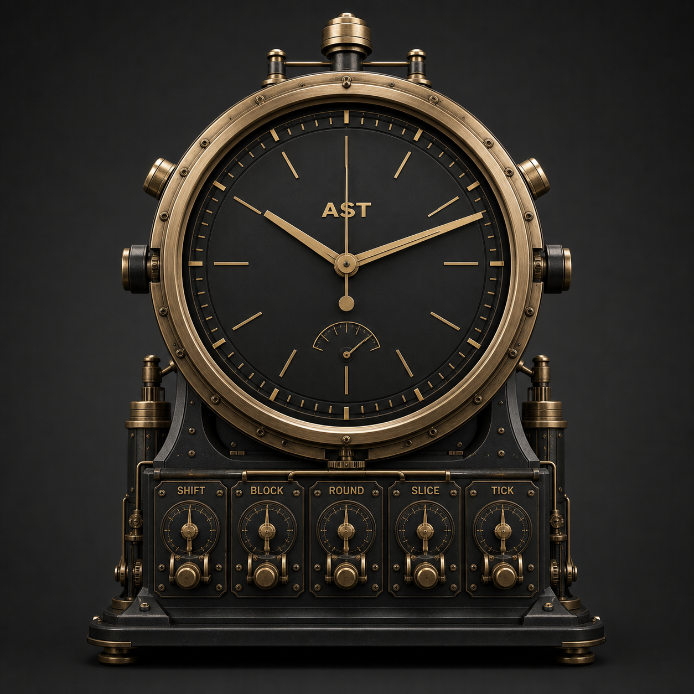
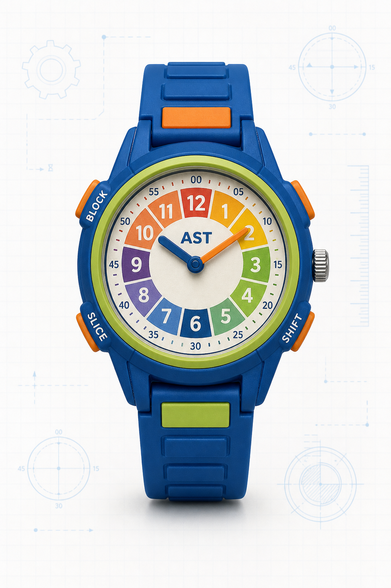

B0
Day Blocks
10 Blocks per operating day
American Standard Time
Because 24 hours was too European, but decimal time was too French.
10 Blocks per operating day
ast.now()
canonical
| Unit | AST | Modern |
|---|---|---|
| Tick | 1 Tick | 1.44 sec |
| Slice | 50 Ticks | 72 sec |
| Round | 12 Slices | 14.4 min |
| Block | 6 Rounds | 86.4 min |
| Shift | 5 Blocks | 12 hr |
| Day | 2 Shifts | 24 hr |
jan_1_epoch
ops.lexicon
official device archive


spec.conflicts=resolved
This implementation treats the unit hierarchy as canonical: 36,000 Ticks, 720 Slices, 60 Rounds, 10 Blocks, and 2 Shifts per day. Any inconsistent field examples are preserved as folklore.